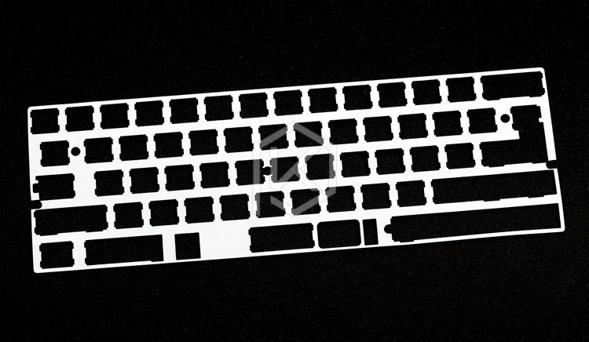
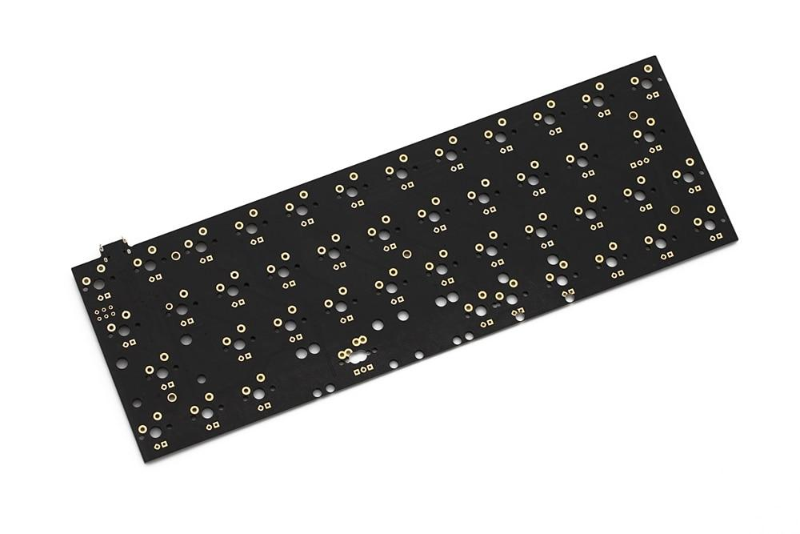
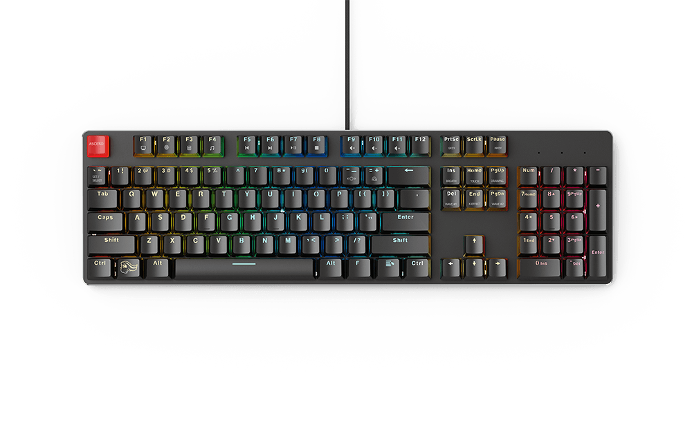
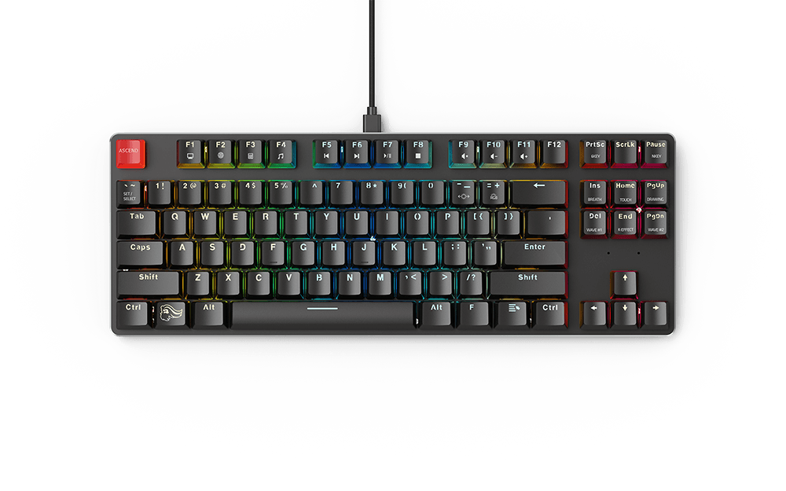
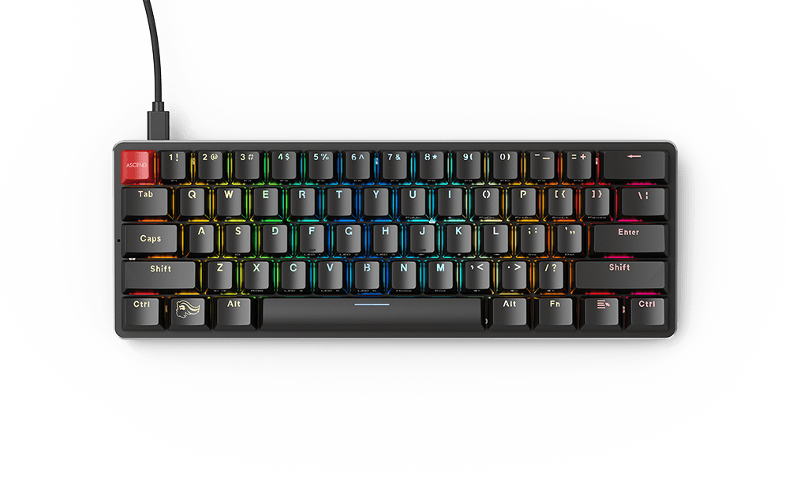

Parts
Of course, we shouldn't forget that there are still other components to consider to make up a full keyboard. They all come together to create a unique feel, sound and aesthetic for every custom item.
Keycaps
These go over your switches and are the main factor to your keyboard look. They can come in different sizes, colors and profiles which is the angle of the keycap in relation to your fingertips to create an easier typing experience. e.g : Cherry, OEM, SA etc. Depending on the material, sound can be a bit different as well.
ABS:
ABS keycaps are the cheapest and most common plastic used for keycaps. ABS keycaps are mass produced because of how easily they are injection molded.ABS is impact resistant, lightweight and very durable. However, ABS keycaps feel smooth and can develop a greasy shine over time even yellowing for old white sets. The sound is usually tinnier or flat due to its low thickness.
PBT:
PBT plastic is less common but is usually higher quality than ABS. The feel is almost "chalky" with a better resistance to shining. They are usually more durable and manufactured thicker than ABS. In turn they have a higher cost to them. The sound is deeper and gives reverb to the press.
Plate
This is the plate between your switches and pcb. Depending on the mount type of the switch, the plate can hold them. Every keypress goes into the plate and can transfer sound differently. Softer material affects the sound with better sound dampening and also materials with flex to it can absorb the switch press. Generally there are 5 different types of plates you will find for various builds unless you go complete custom.
- Brass: Solid rigidity and extra weight.
- Steel: Solid rigidity, good weight, lighter than brass at the same thickness.
- Aluminum: Decent rigidity, lighter than steel, mild flex in comparison.
- Poly: Lighter than aluminum, absorbs sound quite well.
- Carbon Fiber: lighter than Poly, not much sound dampening but louder than Poly. Offers the most flex of plate material as these are usually fairly thin.
PCB
The PCB is a printed circuit board that gets placed inside the case and lets the switches communicate with your computer. Usually the PCB will be installed in the case, with the switches soldered to it although hotswappable pcbs have started to become more popular due to it conveniency. There are several different layouts, PCB types, RGB, underglow, and programmable options that can be had where you can even create your own custom keyboard. Guides for that are widely available.
Case
This is what holds everything together. It's important that it is the same layout and mounting style as your pcb and plate. Your keyboard can be made in custom layouts with different sizes for e.g: Full-Size, TKL(tenkeyless) and 60%.
|  |  |  |
Different mounting styles can give a more consistent sound and feel between the switches. An infographic can be seen here.
{kind=link}